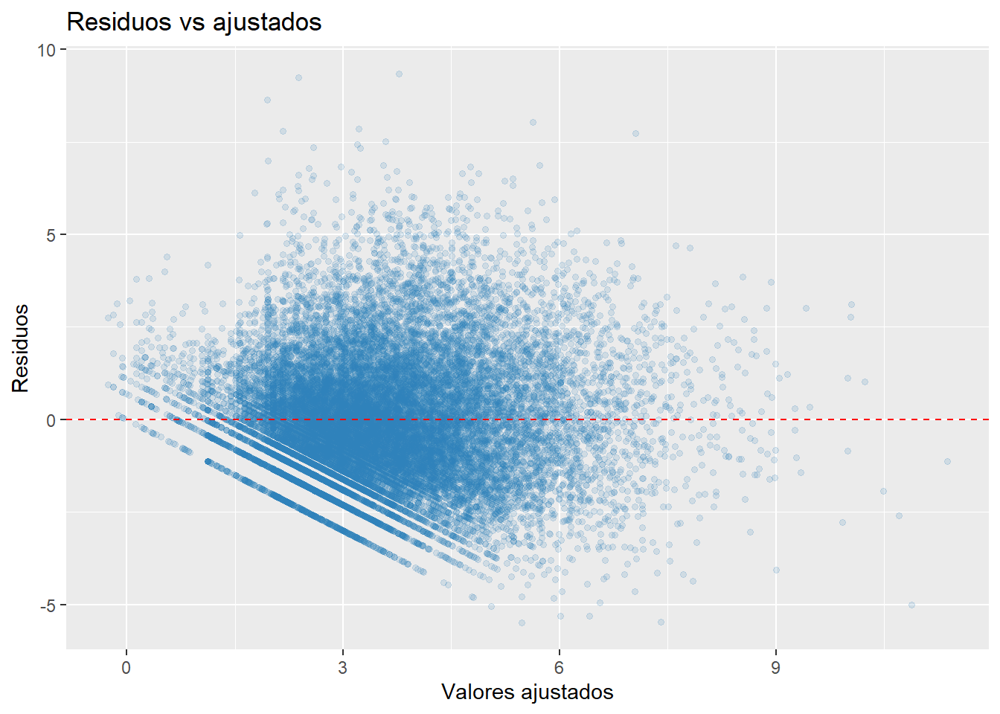
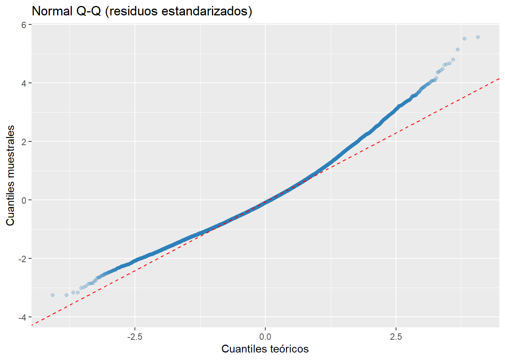

Se ajusta una regresión lineal múltiple como línea base interpretable para explicar variaciones en la popularidad (proxy) a partir de atributos de catálogo.
La variable dependiente se define como:
\[
y = log(1 + positive\_ratings)
\]
Este modelo responde directamente a: “¿qué variables del catálogo se asocian con más valoraciones positivas?”. Se utiliza log(1 + positive_ratings) para reducir asimetría (colas largas) y obtener un ajuste más estable. No se incluyen como predictores variables derivadas del propio objetivo para evitar leakage.
6.2 Partición entrenamiento / test
Mostrar código
set.seed(123)n <-nrow(steam_model)idx <-sample.int(n, size =floor(0.8* n))train <- steam_model[idx, ]test <- steam_model[-idx, ]# Centrado del año usando solo entrenamiento (evita leakage)center_year <-mean(train$release_year, na.rm =TRUE)train <- train %>%mutate(release_year_c = release_year - center_year)test <- test %>%mutate(release_year_c = release_year - center_year)c(n_train =nrow(train), n_test =nrow(test))
n_train n_test
21660 5415
6.3 Formulación de modelos
Se comparan tres especificaciones:
Baseline: predicción constante (media de y en entrenamiento).
En el conjunto de test, el modelo baseline (media) representa la referencia mínima: su R² es 0, lo que indica ausencia total de capacidad explicativa.
Los modelos ajustados mejoran claramente esta referencia:
El modelo simple alcanza un R² ≈ 0.31, reduciendo el error respecto al baseline.
El modelo full logra el mejor desempeño, con R² ≈ 0.38 y el menor RMSE.
Esto implica que aproximadamente un 38% de la variabilidad en la puntuación del juego puede explicarse mediante las variables incluidas (precio, tags, géneros, plataformas, etc.).
Aunque el poder predictivo es moderado, el modelo proporciona una base útil para estimar tendencias generales de valoración.
6.5 Resumen del ajuste (entrenamiento)
Se reportan R² ajustado y el error estándar residual\((\hat\sigma)\) en entrenamiento.
Los valores de R² ajustado son consistentes con la evaluación en test:
El modelo simple explica alrededor del 30% de la variabilidad.
El modelo full mejora hasta aproximadamente un 38%.
El modelo raw no aporta una mejora sustancial adicional.
Esto sugiere que añadir demasiadas variables sin una estructura clara no siempre incrementa la capacidad explicativa, y que el modelo full representa un buen equilibrio entre complejidad y rendimiento.
6.6 Interpretación de coeficientes (modelo seleccionado)
En escala log(1+y), un coeficiente \(\beta\) implica un factor multiplicativo aproximado \(e^{\beta}\) sobre \((1+positive\_ratings)\), manteniendo constantes el resto de variables.
En esta especificación, la columna mult = exp(β) representa el factor multiplicativo sobre el objetivo ante un incremento unitario del predictor (manteniendo constantes el resto), y approx_pct aproxima ese efecto en porcentaje.
Resultados principales. Se observa que n_tags es el predictor con mayor asociación: mult = 2.4956 implica un aumento aproximado del +149.6% en el objetivo por cada unidad adicional en n_tags (IC95% del multiplicador: 2.34–2.66). También presentan efectos positivos relevantes n_categories (+23.6%), log_achievements (+17.2%), linuxTRUE (+15.0%) y log_price (+13.3%), todos con intervalos relativamente estrechos (mayor estabilidad).
Efectos negativos.english1 muestra un efecto negativo notable (mult = 0.441), lo que se interpreta como una reducción aproximada del −55.9% respecto a la categoría de referencia. Asimismo, release_year_c presenta mult = 0.675 (−32.5%), sugiriendo que —según esté centrada/definida esta variable— el año de lanzamiento se asocia a una disminución del objetivo en la escala del modelo.
Efectos débiles o cercanos a nulos.n_genres aparece prácticamente neutro (mult ≈ 0.997, ~−0.3%), lo que indica una contribución marginal una vez controlados el resto de factores.
6.7 Evaluación de supuestos
Los diagnósticos (residuos, BP, VIF) se interpretan como comprobaciones de estabilidad e inferencia. En datasets grandes es frecuente detectar desviaciones significativas; por ello, el foco principal es consistencia del patrón y ausencia de colinealidad severa.
6.7.1 Residuos vs ajustados y Q-Q plot
Mostrar código
diag_df <-data.frame(fitted =fitted(lm_fit),resid =residuals(lm_fit),std_resid =rstandard(lm_fit))p1 <-ggplot(diag_df, aes(x = fitted, y = resid)) +geom_point(alpha =0.15,size =1.2,color ="#2C7FB8") +geom_hline(yintercept =0,linetype ="dashed",color ="red") +labs(x ="Valores ajustados", y ="Residuos", title ="Residuos vs ajustados")p2 <-ggplot(diag_df, aes(sample = std_resid)) +stat_qq(alpha =0.25,color ="#2C7FB8") +stat_qq_line(color ="red",linetype ="dashed") +labs(x ="Cuantiles teóricos", y ="Cuantiles muestrales", title ="Normal Q-Q (residuos estandarizados)")p1

Mostrar código
p2

El gráfico de residuos frente a valores ajustados muestra una dispersión amplia, con cierta estructura en bandas, lo cual es esperable dado que la variable objetivo presenta valores discretizados.
El Q–Q plot evidencia desviaciones en las colas, indicando que los residuos no siguen perfectamente una distribución normal.
Esto no invalida el modelo como herramienta predictiva, pero sí sugiere que:
la inferencia clásica (p-values, intervalos exactos) debe interpretarse con cautela,
podrían explorarse modelos más flexibles o transformaciones adicionales si se buscara mayor ajuste estadístico.
El test de Breusch–Pagan arroja un p-valor prácticamente nulo, lo que indica evidencia estadística de heterocedasticidad.
Esto significa que la varianza del error no es constante: el modelo comete errores de distinta magnitud según el nivel de predicción.
En un contexto de negocio, esto sugiere que el modelo es menos preciso para ciertos tipos de juegos (por ejemplo, títulos extremos en popularidad o precio).
Como medida correctiva, podrían emplearse errores robustos o modelos no lineales, aunque para este trabajo se considera aceptable dado el objetivo exploratorio.
Los valores de VIF observados se sitúan todos por debajo de 2, muy lejos del umbral habitual de preocupación (VIF > 5).
Esto indica que no existe multicolinealidad problemática entre las variables explicativas, y que los coeficientes estimados son relativamente estables e interpretables.
Por tanto, el modelo puede incorporar simultáneamente variables como precio, número de géneros o plataformas sin riesgo significativo de redundancia lineal.
6.8 Conclusión
El modelo de regresión lineal permite cuantificar la relación entre características del videojuego (precio, contenido, plataformas) y su puntuación final.
Los resultados muestran que:
el modelo mejora claramente frente al baseline,
explica alrededor del 38% de la variabilidad,
no presenta problemas de colinealidad,
aunque sí evidencia heterocedasticidad y desviaciones de normalidad.
En términos de negocio, este modelo constituye una primera aproximación útil para identificar qué atributos están asociados con mejores valoraciones, aunque su capacidad predictiva es moderada y podría complementarse con enfoques más complejos.